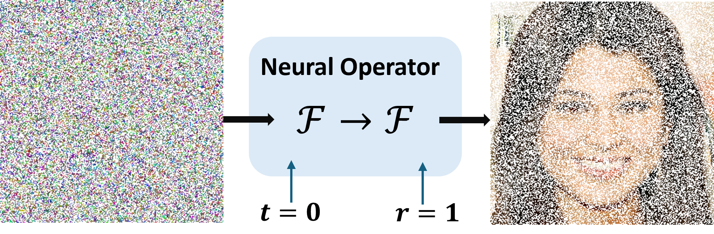
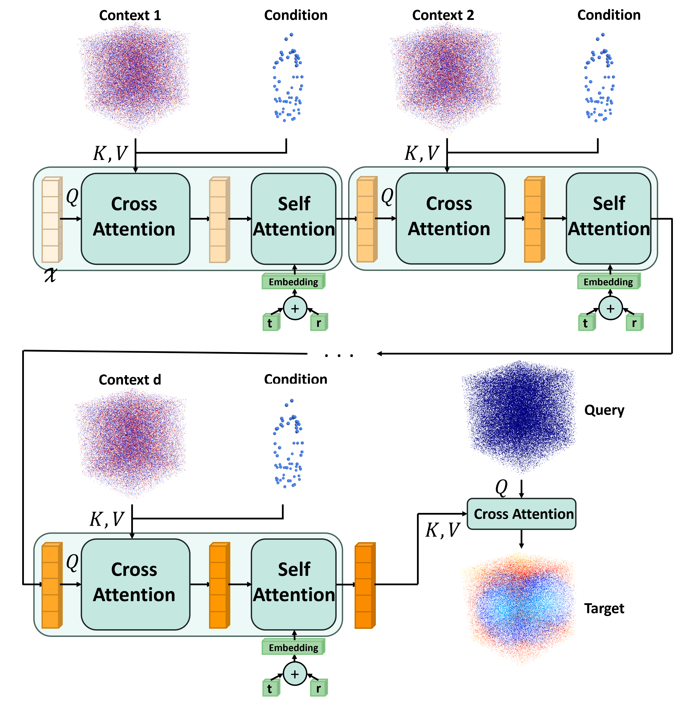
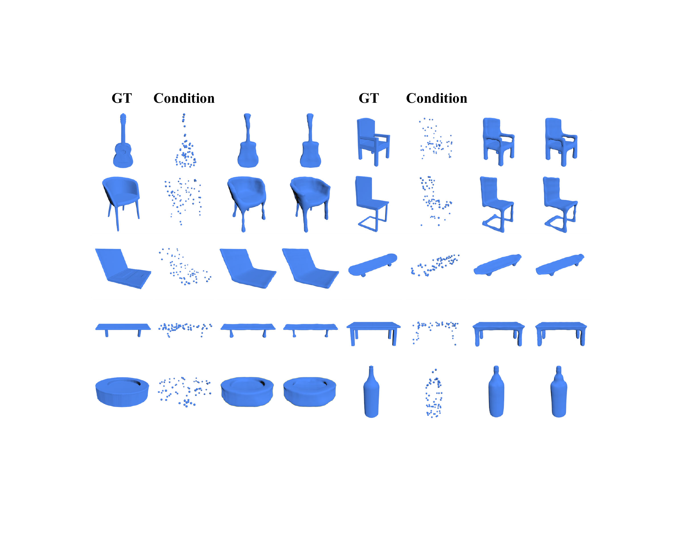
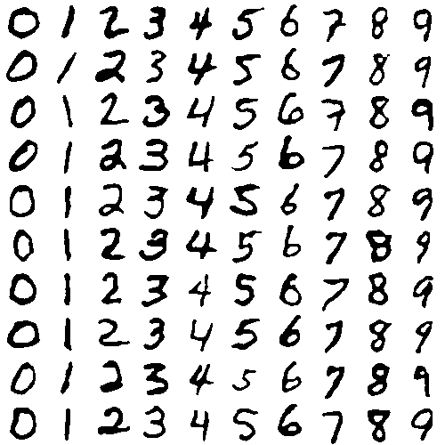

First extension of MeanFlow to functional Hilbert space.
02
First \(x_1\)-prediction formulation for MeanFlow.
03
One-step SDF and image generation based on MeanFlow.
Abstract
We present Functional Mean Flow (FMF) as a one-step generative model
defined in infinite-dimensional Hilbert space. FMF extends the
one-step Mean Flow framework to functional domains by providing a
theoretical formulation for Functional Flow Matching and a practical
implementation for efficient training and sampling.
We also introduce an \(x_1\)-prediction variant that improves
stability over the original \(u\)-prediction form. The resulting
framework is a practical one-step Flow Matching method applicable to a
wide range of functional data generation tasks such as time series,
images, PDEs, and 3D geometry.
Features
FMF contributes both a functional-space extension of MeanFlow and a
new \(x_1\)-prediction formulation motivated by the instability we
observed in SDF generation.
First formulation
\(x_1\)-prediction MeanFlow
FMF formulates \(x_1\)-prediction for MeanFlow. Instead of
predicting the average velocity \(\bar u_{t\to r}\) directly,
the network predicts the endpoint obtained by extrapolating the
mean velocity to \(t=1\):
\(\hat f_{1,t\to r}=(1-t)\bar u_{t\to r}+\mathrm{Id}_{\mathcal F}\).
Why it matters
Stable SDF generation
The \(x_1\)-prediction variant was introduced to address severe
instability in SDF generation, where \(u\)-prediction can collapse
to nearly constant fields. SDFs are functions, while valid
shapes concentrate on a structured, high-dimensional data
manifold inside that function space. Predicting the endpoint
keeps the target closer to this manifold and improves stability.
See the explicit \(u\)-prediction versus \(x_1\)-prediction comparison in the
2D SDF validation experiment.
Contemporaneous view
Connection to JiT
When we first observed the stability gap, the mechanism was not
fully clear. A contemporaneous work,
JiT, provides a
useful explanation through the manifold assumption: clean data
lies on a lower-dimensional manifold, while noisy or
velocity-like quantities occupy a much harder high-dimensional
space. This view supports why \(x_1\)-prediction can be more
stable than \(u\)-prediction for SDF functions.
Priority
Earlier than pMF
FMF was submitted to arXiv on November 17, 2025. The later
pixel MeanFlow
(pMF) work was submitted on January 29, 2026 and also uses
an \(x\)-prediction target with a MeanFlow-style velocity loss.
FMF introduced the \(x_1\)-prediction MeanFlow formula more than
two months earlier.
Formulation
\(u\)-prediction and \(x_1\)-prediction
The core schematic below is taken from the camera-ready figure. It
shows how FMF extends the \(x_1\)-prediction idea from Functional
Flow Matching to the two-time Functional Mean Flow setting.
Functional Mean Flow: \(u\)-prediction estimates
\(\bar u_{t\to r}(f_t)\), while \(x_1\)-prediction estimates
\(\hat f_{1,t\to r}(f_t)\).
Formula Highlights
These are the two parameterizations emphasized in the paper source:
predicting mean velocity directly, or predicting the endpoint
induced by extrapolating that mean velocity to \(t=1\).
FMF is evaluated across functional domains. The sections below
highlight image generation, 3D SDF generation, and a 2D SDF
validation experiment.
Figure 2: one-step image generation at multiple resolutions from
a model trained on random \(1/4\) pixel subsets.
PDF version
1. Function-Based Image Generation
Images are treated as continuous functions rather than fixed
pixel grids. Following the Infty-Diff setting, the model
observes a random \(25\%\) subset of pixels from
\(256\times256\) images and performs one-step generation at
arbitrary query coordinates.
At inference, changing the query grid produces multiple output
resolutions with the same trained model.

Model schematic: both input and output are continuous
functions, so generation is defined over arbitrary pixel
coordinates.
Figure 4: one-step generation on AFHQ, LSUN-Church, and FFHQ.
The model is trained on random \(1/4\) pixel subsets of
\(256\times256\) images and evaluated at \(256\times256\) and
\(512\times512\).
PDF version
2. SDF-Based 3D Shape Generation
For 3D shape generation, each mesh is converted into a signed
distance field. The model receives only 64 points sampled from
the target surface and reconstructs the full SDF field in one
step using \(x_1\)-prediction FMF.
Training follows the Functional Diffusion representation:
context points \(\{x_c^i\}_{i=1}^n\) carry input values
\(\{v_c^i\}_{i=1}^n\), query points
\(\{x_q^j\}_{j=1}^m\) receive predicted SDF values, and a
dense \(128^3\) query grid is used before Marching Cubes.

Functional Diffusion architecture used for 3D SDF generation:
context functions interact with learnable functional vectors
through cascaded cross- and self-attention, then query points
are decoded into SDF values.

Shape reconstruction task: GT surfaces, 64 conditioning points,
and one-step FMF reconstructions.
PDF version
3D SDF-Specific Implementation
The SDF task keeps separate context and query representations
of the same reference field. Gaussian-process-like noise is
sampled on a coarse 3D grid and interpolated to both context
and query points.
Before the full 3D ShapeNet reconstruction task, we validate
the stability issue on a controlled 2D MNIST experiment. Digits
are converted into signed distance fields and trained with the
same Functional Diffusion-style representation. Under this SDF
setup, \(u\)-prediction collapses, while \(x_1\)-prediction
preserves valid SDF structure and recovers digits from
zero-level sets.
\(u\)-prediction FMF can collapse on SDF training.
\(x_1\)-prediction FMF produces valid SDF fields.

Binary digits extracted from the zero-level sets.
Paper
The camera-ready PDF is embedded below for reading directly on the
project page.
BibTeX
@inproceedings{li2026functional,
title = {Functional Mean Flow in Hilbert Space},
author = {Li, Zhiqi and Sun, Yuchen and Turk, Greg and Zhu, Bo},
booktitle = {Proceedings of the IEEE/CVF Conference on Computer Vision and Pattern Recognition},
year = {2026}
}